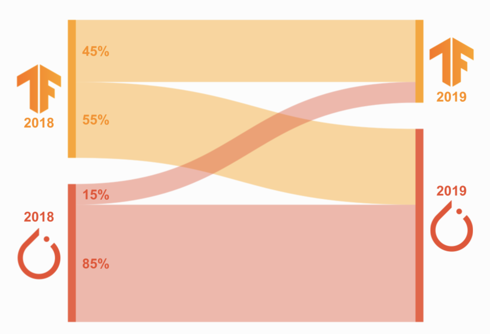

Data Science from Scratch Code
2021-12-15
Chapter 1 Computer Set-Up
When building projects efficiently, you will need different set-ups in order to have everything in your code work properly, not only on your own machine, but also on other machines, for example of another team-member.
1.1 Mac Tricks
Before we start with the whole set-up, you will also need to know how to work more efficiently with your Macbook-Computer.
Those “tricks” will be useful for many other programs you will need when working in the field of datascience.
1.1.1 Öffne die Developer-Tools von Google-Chrome
command + shift + i
1.1.2 Speichern
command + s
1.1.3 Speichern Unter
shift + option + command + s
1.1.4 Finder
command + leerschlag
1.1.5 Programm schliessen
command + q
1.1.6 Neuer Ordner
shift + command + n
1.1.7 Tilde Zeichen
Das ist nützlich für shortcuts im Terminal, wenn man das Working Directory festlegt:
option + n
1.1.8 Backslash
Useful for paths within the Directory:
option + shift + 7
1.1.9 Screenshot vom Bildschirm
command + shift + 3
1.1.10 Teil des Bildschirms Screen-Schoten
shift + command + 4
1.1.11 Verlauf löschen in Chrome Browser
shift + command + entfernen
1.1.12 Verlauf löschen Safari
command + alt + e
1.1.13 Bildschirm Aufnahme
Funktioniert nur, wenn QuickTime Player aktiv ist:
option + command + n
1.1.14 Lesezeichen in Google Chrome
command + d
1.1.15 Search Console Pop Up
option + command + j
1.1.16 Format Kopieren einer Zelle (in Numbers)
option + command + c
1.1.17 Format übertragen einer Zelle (in Numbers)
option + command + v
1.1.18 Switch between Applications on your computer
command + tab
1.1.19 Move Forward through Tabs
control + tab
1.1.20 Zahl als Exponent
Geht nur in Pages oder Tablett!:
shift + control + command + „+“-Zeichen WÄHREND man die Zahl mit der Maus markiert
Dann ist sie noch „normal“ und nicht tiefgestellt —> also so: zum Beispiel: 2.
1.1.21 Source-Code einer Webseite aufschalten
Option + CMD + u im Browser drücken
1.1.22 Interaktive Code-Ansicht für das Abchecken von Webseiten
fn + F12-Taste auf Touch Bar drücken
1.1.23 Approximate Symbol ≈
option + x
1.2 Virtual Environment
Because the libraries you work with in your projects will be updated over time (this is generally bad news, since this will cause all sorts of dependency problems across your libaries you use), it is crucial to understand that you will need a virtual environment (venv). There, you will install all the libraries you need. The major advantage here, is that you can control the version you install the library. Furthermore, you can send the venv to another computer and the people will download exactly the versions of each library.
This allows that your code will always work, independently of the machine you will use! There will be no dependency problems anymore, which is a huge win.. :)
1.2.1 Create a venv
Go to your terminal and plug in the following code:
conda create -n YOUR-VENVIRONMENT-NAME-HERE python=3.61.2.2 Activate your newly created venv
Weirdly though, you also need to activate the environment you created above. Plug in the following code:
source activate YOUR-ENVIRONMENT-NAMENote that the code above can also be used to activate virtual environments you created in the past! =)
1.2.3 Install packages
Now that you are in your new venv, you can start downloading some packages:
python -m pip install SOME-PACKAGES1.2.4 Overview of packages
To check your packages within your venv, simply type:
conda list1.2.5 Overview of every venv
To check all the venv I created, simply type:
conda env list1.2.6 Execute any python skript
In order to execute a Python-script, you will need to head towards the directory that the .py-file is and - then - type in:
cd go-to-the-dir-where-your-file-is
python my-script.py1.2.7 Deactivate the venv
After you have completed what you wanted, you will need to shut-down the venv. Simply type:
conda deactivate1.2.8 Delete a venv
Simply type:
conda env remove -n my-new-env1.3 R Markdown
When writing Code, I recommend you to use .Rmd-Documents, which will allow you to combine both, text, as well as Code (in R, Python, or any other language of your choice).
Actually, this document is written in .Rmd-Files, where I combine the text, with so-called “code-snippets”, like the follwing:
This is a Code-SnippetWhen writing Code in R-Markdown, it will be useful for you to know when:
- to execute code wihtin a code-snippet
- and where not.
1.3.1 Hide Source Code
This will be done with echo = FALSE:
## [1] 2With figures, you need fig.show = 'hide' in R:
To hide warning-messages, just use message = FALSE:
1.3.2 Execute a Code-Chunk without showing any Output
You will get an output, e.g. the code will execute, but you will not show the code.
1.3.3 Do NOT execute a Code-Chunk
If you want to show code for demonstration purposes - like on this Website -
you will probably want to only show the code, but not execute it. This is also possible with eval=FALSE:
1.3.4 RMarkdown- VS. Markdown-Files
- Verwende
<ins></ins>als HTML, um Texte zu Unterstreichen.-
Achtung
: Der HTML-Tag
<u></u>geht nicht in.rm-files. Lustigerweise funktioniert<u></u>jedoch in.Rmd(= R Markdown) 😂
-
Achtung
: Der HTML-Tag
1.3.5 Nützliche Hexadecimals
- Hexadecimal code for the left square-bracket =
[–> Ich muss das so machen mit den eckigen Klammern, weil[]wird für Links & Bilder verwendet inMarkdown🤪 - Hexadecimal code for the right square-bracket =
]–> Ich muss das so machen mit den eckigen Klammern, weil[]wird für Links & Bilder verwendet inMarkdown🤪
1.4 Terminal-Commands:
A terminal will be essential for your projects, since you will - oftentimes - install packages or move files around your repositories with it. Here, you will find the most useful things you should know when using the Terminal.
1.4.1 Aktuelle Position // Directory?
For Mac:
pwd= print working directoryFor Windows:
dir= this is the same command aspwd, butdiris forWindows
1.4.2 Showing the child-directories inside the directory you are currently in?
ls= prints all thechild-directories(= one layer deeper of the path) from theparent-directory(= current directory you are in with your terminal) you are currently in.
1.4.3 Delete everything you wrote in your Terminal up until now?
clear= clears the terminal
1.4.4 Change directory?
cd= change directorycd ..= go back one directory.
1.4.5 Creating a new directory?
mkdir new-folder-1 new-folder-2 new-folder-3 = This creates 3 new folder within the current (working-) directory you are currently in.
1.4.6 Create a new file?
touch index.html app.css == This will create an index.html, as well as a app.css-file within the current (working-) directory you are currently in.
1.4.7 Remove files?
rm index.html app.css capture.png = This will delete the index.html-, the app.css and the capture.png-files from the current (working-) directory you are currently in.
1.4.8 Open the current directory you are in?
open .= opens the current directory you are in
1.4.9 Terminal Magic-Commands for being faster?
- Trick #1: hit the “Tab-Taste” == will automatically auto-fill the name of the file / directories etc.
- Example: Type
cd Dok+ “Tab”-Taste –> auto-fill activates –> im Terminal steht dann der automatisch ausgefüllte Name des Files / Directories, zum Beispielcd Dokumentebzw.cd Name_Of_Child_Directory
- Example: Type
- Trick #2: How to find a path of a directory that is situated very deeply in your local computer?
- Example: Type
cd+ drag-&-drop the folder that is deep in your computer with the file in it.
- Example: Type
1.4.10 Syntax im Terminal
*-Zeichen == Represents “all files”.
1.4.10.1 Beispiel: Delete all Files in a folder that start with the letter a?
To delete all files in a folder that start with the letter a, then you should write:
/folder/a*.-Zeichen == use the.character to represent the current folder.~-Zeichen == represents the “home directory”.
1.4.10.2 Beispiel: how to return to your home directory?
You should use:
cd ~1.5 How to activate & use Python?
Python can be executed on your local computer via a Jupyter Notebook, which can be accessed through an IDE. R, Visual Studio Code or PyCharm are examples of IDEs.
Let’s assume, that we took PyCharm as our IDE. We do the following steps:
- Use the
Terminalwithin PyCharm. - Once you opened the PyCharm-
Terminal, go to the directory that will be used for the Jupyter Notebook, by typing something ascd /some_folder_name. - Finally, type in
jupyter notebookin theTerminalto launch the Jupyter Notebook App. The notebook interface will appear in a new browser window or tab.
1.6 Git & Github:
pull request= “Take some changes from a particular branch and bring it into another branch.”- Achtung: es ist eine Request, es wurde noch nichts gemerged! Für das brauch es noch
mergeals zusätzlichen Befehl.
- Achtung: es ist eine Request, es wurde noch nichts gemerged! Für das brauch es noch
fork a repo= “Take someone else’s repo - because you love it 😊 - and put it into your own list of repos, in order to be able to edit it yourself without affectig the original repository of the owner.”commit= savehash= unique identifier in the history of files. Ahasis a huge string composed of characters (= Buchstaben) & numbers and is used when using a version-control software, such asGit.git add= Der Befehlgit addwird zu vielen verschiedenen Zwecken eingesetzt. Man verwendet ihn, um:- neue Dateien zur Version-Control hinzuzufügen,
- Dateien für einen Commit vorzumerken, UND
- verschiedene andere Dinge – beispielsweise einen Konflikt aus einem Merge als aufgelöst zu kennzeichnen.
Leider wird der Befehl
git addoft missverstanden. Viele assoziieren damit, dass damit Dateien zum Projekt hinzugefügt werden. Wie Sie aber gerade gelernt haben, wird der Befehl auch noch für viele andere Dinge eingesetzt. Wenn Sie den Befehl git add einsetzen, sollten Sie das eher so sehen, dass Sie damit einen bestimmten Inhalt für den nächsten Commit vormerken (= also Punkt (2) ist vor allem relevant in der obigen Liste.
How to tell the original owner you want to merge your changes that you made back into their orignal repo and implement them those changes into their original work // repo?
Look at the youtube video from Coding Train ab 9:35-11:50
- To see how to refer to issues & bugs in your code directly via your commit-command, look at the youtube video ab 6:35-7:40 and to diretly close issues, because you resolved it, look look at the youtube video ab 7:40-8:55.
What is a remote?
A remote is a duplicate instance of your repository (on your local computer) that lives somewhere else on a remote server (like Github).
1.6.1 First time using Git & Github
There are specific Git-commands that you need to know, when you begin to start to work with Git and Gibthun for the first time. Note that all these Git-commands need to be typed within the Terminal on your local computer.
git config --list= Sehr wichtig, wenn duGitzum ersten Mal via einem neuen Computer runst! Dieser Befehl zeigt dir, welchen Username & Email du aktuell verwendest (schaue beiuser.name&user.email, ob es deine Github Anmelde-Daten sind). Es ist key - insbesondere, wenn du neu mit Git beginnst - dass diese Parameter mit deinen Github Anmelde-Daten übereinstimmen! Ansonsten musst du immergit clonemachen und die ältere Version in einen “alt”-Ordner tun, was extrem mühsam ist.- Wenn du noch keinen
user.namehast, dann gebe folgenden Code in die Command-Line ein:git config --global user.name 'Dein_Github_UserName'.- Beachte: Schreibe den Namen mit die Anführungszeichen!
- Wenn du noch keinen
user.namehast, dann gebe folgenden Code in die Command-Line ein:git config --global user.name 'deineEmail@email.ch'.- Beachte: Schreibe die Email ohne die Anführungszeichen!
- Check if it worked?: Gebe wieder den Befehl
git config --listund schaue beiuser.name&user.email, ob dort deine Github Anmelde-Daten übernommen wurden.
- Wenn du noch keinen
git push= this is the act of sending toGithub.git pull= this is the act of receiving fromGithub.
1.6.2 2 Key concepts in Git
Before starting to work with Git, you need to understand that there are 2 ways of starting a project:
1) Create a `remote` repository on Github and then `cloning` it - via Git - on your local computer to work from there.
2) Creating a repository `locally` on your computer and then - aftre a few months working on this repository - adding it to Github.Depending on which of those 2 different ways you choose to start a project (create a repo right from the get-go on Github VS. work locally and then - after some time - push everything to Github), the Git-Commands will slightly differ.
1.6.2.1 Start Project via Github (remote-possibility)
What are the Git-Commands, if you start your project directly by creating a Repo on Github (= possibility 1) above)?
git clone https://github.com/joffreymayer/tageb.git== Will clone your remote directorytageb- which is currently on Github on your local computer, which is simpler // more comfy when working on projects =)git status= Assume that you worked on & modified a file on your local computer that you previously had on Github (you cloned the directory with the file in it on your local computer). With the commandgit status,Gitwill check whether there is any changes between your local files VS. the files in the remote directory on the Github-Server // -Website.git commit -a -m "Test comment for a commit"= If you changed a file locally and you are happy with your results, you will need to make acommit(= save) andaddall files (= this is why we have an input // argument-a; the concept ofaddingwill be explored in the chapter below, where you want to put a local repo into Github after a few months) and you also want to document, what exactly you modified, if you need to go back to a previous version of your file (= this is why we have an input // argument-m "comment is here...").git push origin master= If you have done some changes locally on your file, you can nowpusheverything on the Github-Website.git log= see, locally, the history of yourgit commits.- Achtung: When running this command, you might - accidentally - run into a dangerous environment called
VIM, which is a terminal-based text-editor. The problem when you are inVIM, is that you might not be able to get out of it. -Solution: To get out ofVIM, just type in:qand you will get out of it.
- Achtung: When running this command, you might - accidentally - run into a dangerous environment called
git remote -v= This will tell you which URL is theremoteon which your repository is hosted.- Merke: The URL of your repo is assigned to the variable
origininGit.
- Merke: The URL of your repo is assigned to the variable
1.6.2.2 Start Project via local computer (local-possibility)
What commands do you need, when you decide - after a few months working locally on your computer - to put everything on Github (= possibility 2)?
git init== To get started, you need to go to your repository with your terminal - e.g. set the working directory withcd Joffrey\dokumente\my_project) first - and, then, transform your repository to a Git-Repository by just typinggit initinto your terminal.git add single_file.txt== After you initialized your repository, you will have an empty git-repository.Gitwill nottrackthe files in your repository (=untracked files), unless you explicitly point them out via thegit addcommand.- If you want to add all files quickly // simultanoeusly:
git add . - Für genauere Theorie // Erklärung dahinter: Siehe Youtube-Video Coding Train ab 2:10-6:03
- If you want to add all files quickly // simultanoeusly:
git commit -m "Adding a new comment for my commit": After having pointed out toGit, which files he needs to track, you can do acommitof the changes of the files you modified, like in possibility 1).- Achtung, es gibt einen kleinen Unterschied zu possibility 1): das
-a(siehe oben) ist verschwunden, weil wir hieraddundcommitals zwei separate Schritte betrachten.
- Achtung, es gibt einen kleinen Unterschied zu possibility 1): das
git remote add origin https://github.com/joffreymayer/new-repo= Because our repository is still currently not onGithub, we first need to go on the Github Website and create an empty repository. After having done this, you need to tellGit- with the commandgit remote add origin+ copy-pasting the URL “https://github.com/joffreymayer/new-repo” - that this is our local- Check if it worked: Type the following into the Terminal
git remote -v. It should output the variable name - usually calledorigin-- Note if you want to be fancy: Within
git remote add origin, the nameorigincan be changed to any word you like. This is just the variable name in which your Github-URL will be stored.
- Note if you want to be fancy: Within
- If there is already a remote with the default name
originbut you don’t like the name, you can change the name by:git remote remove origin–> this will delete the remotegit remote -v–> just to check if step 1) worked –> should not output anythinggit remote add noob https:\\github.com\project-1–> now, re-name the remote and call itnoob
- Check if it worked: Type the following into the Terminal
git push origin master== Finally, you will be able to put all your files into the freshly made remote-repository onGithub.git pull origin master== Assume that you did changesremotlyon Github but not yet locally on your computer. This does not matter, since you can just enter the commandgit pull origin masterto be able to retrieve the changes that you didremotlyon Github onto your local computer =)
1.6.3 Working with Branches
Tutorial for branches?
Look at youtube-videos from Coding Train.
git branch new_branch== this will create a branch locally on your computergit checkout new_branch== this will tellGit: “ah, he wants to go into the branch called ‘new_branch’”.git branch== this will give you a list of all the branches you ave created locally. Furthermore, it will tell you on which branch you currently work on.
How to merge the changes you made on a separate branch to the
master-branch(= main branch)?
git branch new_branch== this will create a branch callednew_branchlocally on your computer.git checkout new_branch== You will tellGit: “I now want to work on this newly created branch called ‘new_branch’”.git checkout master== After you are happy with the changes you did innew_branchyou will need to prepare for the merging by switching to your main-branch, which is themaster-branch.git merge new_branch== Since you currently are in themaster-branch, Git will know that you want to mergenew_branchinto themaster-branch.
1.6.4 Set-Up an SSH-Key for Github
Whenever you will work with Git and Github, you will always need to type in your password, whenever you push something to the Github-Cloud.
*That’s why you should start using an SSH-Key, giving Github your public-key and your computer the private-key.
This Youtube-Video from WebDevSimplified will show you how to do it =)
That was it 😎
1.7 LaTeX
This bookdown is created via a .Rmd-File. For a Markdown to be able to read some mathematical formulas, we will need the LaTeX-language.
1.7.1 What is the LaTeX-Code for \(\hat{y}\)?
Simply type:
$\hat{y}$1.8 Wörterbuch
1.8.1 Data Science VS. mein Economics-Studium
Was ist der Unterschied zwischen einem
Data ScientistVS. was ich in meinemEconomics-Studiumgemacht habe?
- Erkenntnis: Machine Learning wird als eine “Black Box” betrachtet, wo man den X-Variablen des Modells keine grosse Beachtung schenkt: man bringt sie einfach ins Modell rein. Im Kontrast dazu, sind Ökonomen mehr dazu getrimmt, mit Hilfe eines theoretischen Modells, die “richtigen” X-Variablen zu selektieren.
1.8.2 IDE explained
What is an IDE?
- Abkürzung:
IDE== Integrated Development Environment - Definition: An integrated development environment (IDE) is software for building applications. It combines common developer tools into a single graphical user interface (GUI).
- Example: R, PyCharm oder Visual-Studio Code are all IDEs. Think of it as a modern Dream Weaver! :)
Was ist
IDE PyCharm?
Das ist das RStudio von Python.
1.8.3 Restful API
What are Rest APIs?
Synonym: Restful APIs
Defintion: API stands for Application Programming Interface. An API is a contract that allows a developer (= you) to interact with an “application” (= a database // the object of interest) through a set of “interfaces” (= list of URLs // this is how you are able to interact with the “application”, which can be an App, a library in R / Python or a Database).
- Quelle: Pokemon-API
Zusammengefasst in meinen Worten: Ein API sind Befehle, die du gibst, um mit einer Datenbank (z.B. auf einem Server) zu kommunizieren oder ein Package (in R oder Python) zum runnen zu bringen. Ganz einfach xD
Background Client-Server Architecture: most of the applications these days, follow this architecture.
- Client == App itself == Front-End
- Server == Back-End
Communication between the Sever & the Client (= App) happens via API by using the
Http Protocol.- Example: if the App wants to access the particular data of a customer, it sends a request to the server via http-protocol.
So, when does the
Rest APIcomes into play? –> the Rest API is a standard that established itself in the industry, when communaction between client & server –> these are theCRUD Operations, which are by definition:GET== getting the data from the serverPOST== creating dataPUT== updating dataDELETE== deleting data
1.8.3.1 API Example
Beispiel eines
APIin Python?
Das Modul // Package sktime verwendet einen ähnlichen API, wie die berühmte Machine-Learning sklearn-Library. Hierbei wäre der Programmierer (= Du) als Forecaster verstanden, welcher via sogannten methods (zum Beispiel die fit-method, um das Modell zu trainieren // estimaten) mit der application (= hier: Python) interagiert.
1.8.4 Magic Commands in Python
“Magic Commands” in Python, mit denen du unglaublich schnell herausfinden kannst, was eine Funktion überhaupt tut UND welche Inputs in eine Funktion gehören?
shift+Tab→ wenn du nicht weisst, was eine Funktion // Method tutTab→ innerhalb einer Funktion, um eine Übersicht zu allen Inputs zu erhalten! xD
1.8.5 Pipe-Operator in R
What is the
Pipe-OperatorinRand what does it do?
The Pipe-Operator in R looks like this: %>%. It takes in an input and “transports” it into another function to use the input and produces an output. This verbal explanation can be best illustrated via a code-example in R:
library(tidyverse)
result <- mtcars %>%
group_by(cyl) %>%
summarise(meanMPG = mean(mpg))- Quelle: A Guide to the Pipe in R
1.8.6 Docker
Was ist
Dockerund was ist der Vorteil davon?
Docker wird verwendet, um ein Virtual Environment zu bilden, welches - wie ein Container - dir Punktgenaue Versionen von bestimmten Packages und Programmiersprachen (Python etc.) liefert. Docker läuft über Open Shift, welches eine Art Management-Programm für Docker ist (so viel ich das verstanden habe…).
1.8.6.1 Definitions
Image- An image is an environment that has been built from a series of instructions called aDockerFile. Images can be prebuilt and hosted onDockerHub(similar to how GitHub hosts version controlled software files). The image is needed to run a Docker Container.Container- A container is a virtual environment that combines a Docker Image with software (files) to run an application in a controlled environment (a reproducible software environment created virtually from the Docker Image).DockerHub- An online community for storing and sharing container images. Has Public and Private repositories for image storage. It’s basically a Cloud, like Github.Fazit: DockerFile –> Docker Image (can be pre-built and hosted on the DockerHub-Cloud) –> Docker Container
1.8.7 Tensorflow and PyTorch
Definition?
PyTorch and TensorFlow are far and away the two most popular Deep Learning frameworks today.
While TensorFlow has a reputation for being an industry-focused framework and PyTorch has a reputation for being a research-focused framework.
Which one is more popular in the Deep-Learning Community?
PyTorch VS. Tensorflow popularity
As you can see, the adoption of PyTorch was extremely rapid and, in just a few years, grew from use in just about 7% to use in almost 80% of papers that use either PyTorch or TensorFlow.
 The researchers find that the majority of authors who used TensorFlow in 2018 migrated to PyTorch in 2019 (55%), while the vast majority of authors who used PyTorch in 2018 stayed with PyTorch 2019 (85%).
This data is visualized in the Sankey diagram above, where the left side corresponds to 2018 and the right side to 2019.
1.8.8 Data Pipeline
Was ist eine
Data-Pipeline?
After streaming your data (in real time) // downloading your data from a provider, it’s basically a way to automate the process of data cleaning in order to be able to get the plots // models from your “dirty data” in a fraction of the time you would spend, if you would do the data cleaning “by hand” yourself.
- Youtube-Video: What is a Data-Pipeline?
1.8.9 Fundamental-Daten
Was versteht man unter
Fundamental-Daten?
Fundamental-Daten sind effektiv messbare Daten, die über Datenbanken accessible sind und welche als Proxy - beispielsweise in Regressions-Analysen - verwendet werden können.
1.8.10 Data-Flow
Was versteht man unter dem
Data Flow?
Mit dem Data Flow sollen folgende Fragen beantwortet werden:
- Welche Daten werden wo geholt & wieso?
- Wie werden die Daten anschliessend verarbeitet?
- Was ist der End-Output, nachdem die Daten - beispielsweise - in einem ML-Modell verwedet wurde?
Zur Illustration des Data Flows, gab es hierzu im Wissensaustausch auch eine Bild:
Beispiel zum Data Flow
1.9 Synonyme
1.9.1 Data Science
- batch = sample-size when you train your model with a dataset
- Granularität (Beispiel) = Angenommen, man möchte wissen, wie viele Tage, Stunden, Minuten und Sekunden innerhalb von 20’044 Sekunden enthalten sind → hier haben wir also Granularität von 4 → Lösung: 4 Tage, 18 Stunden, 37 Minuten, 44 Sekunden
- Kalibrierung des Modells == Wie wurde das Modell programmiert im Allgemeinen? → Dazu gehört - bei uns - die Anpassung der Prognose.
- label == true y-value
Pop== “Pop” is simply a word that means “to drop something”. For example,df.pop('date')means that I am dropping the column called “data” from a dataframe called “df”. Fancily, if you writedf.pop('date')and save it into another variable, then you can only select this dropped column from the ddset.- relativ zu == im Verhältnis zu
- shape == dimension
- target == predicted y-value
- Treiber == x-Variablen
- Volume == Speicherplatz
- weights == estimated coefficients
1.9.2 Machine Learning
"feed in"== plug in (–> häufig im Zusammenhang mit Einsetzen von konkreten Werten für die x-Variablen in das geschätzte Modell, um Predictions zu erhalten)instance== value within a cell == konkreter “x”-Wert, welcher angenommen wird und du - beispielsweise - für eine Prediction verwenden kannst.Forcasted data== These are the predictions that you do via the help of a model (–> by plugging in concrete x-values), that you’ve built.Training Dataset//Training Set== This is the sample, that you use to estimate your model.Testing Dataset//Test Set== This is thehold outset, which you use at the end, to check whether your model is able togeneralize//extrapolatewell to new data."the model is learning== what is meant by “learning” is: given some Datenpunkt-Wolke, the computer will try and fit the “best line” [oftentimes by minimizing the sum of the squared residuals, if you useOLS(= Ordinary Least Squared)] to construct the “best model” possible.Training== You are estimating a model on the trainig-dataset, such that the model “learns” from the data.shuffle== englisches Wort für “mischen”. In the context ofsplitting the dataset into test- & training-data, it is common practice toshuffleyour observations within your dataset first.- Reason why you
shuffle?: Shuffling data serves the purpose of- reducing variance AND
- making sure that models remain general AND
- overfit less.
- Merke: When dealing with
time series, you should not useshufflewhensplitting the datainto training- & testing-data.
- Reason why you
training score//Test Error== This error // score is the [oftentimes squared] difference between thetrue y-variableandestimated // predicted y-variableand measures // evaluates how well the model is “performing” // how good the model is on atest setwith an increasingly biggertraining dataset.cross-validation score//Validation Error== This is the (mean) error // score [because ofcross-validation] that measures // evaluates how the model is “learning” over increasingly biggertraining datasets.fold== subset of thetraining dataset- Example: In a
K-Fold Cross-Validation, you randomly split the training set into 10 distinct subsets, which are calledfolds.
- Example: In a
samples== number of rows // number of observations within a dataset.classifiers== These are simply regression-functions, where the Y-Variable is binary, e.g. die Y-Variable kann nurY = 0ODERY = 1als Werte annehmen.- Example: Logit- & Probit-Regression, or Naiv Bayes, etc…
initialization//declaration//specification== This is the assignment of an initial value for a data object or variable.Array== A List of Data is an array. It is a data structure, which contains “n” objects within a list.- Quelle: The Coding Train 3:10-3:22
Extrapolation== Voraussage von Y-Predicted Values, welche mittels X-Variablen ermittelt werden, welche zuvor nicht im Datensatz waren.Interpolation== Voraussage von Y-Predicted Values, welche mittels X-Variablen ermittelt werden, welche bereits im Datensatz waren, als die Schätzung getätigt wurde.sliding window== This is just a way to tell python how to do a cross-validation and have equal lengths of time series where we can learn on.Learning Task== Forecasting Task // Extrapolation [in Time Series]Forecasting Horizon== Time Points, you want to predict (= dein ) \(\hat{y}\)Time Heterogenous Data== Different Time Series have different time stamps- Quelle: Ab 27:05 (Link: http://www.youtube.com/watch?v=Wf2naBHRo8Q&t=27m05s)
Seasonal Periodicity== The number of months per year, in which the forecaster expects to see a seasonal pattern.- Concrete Example: In Philipp’s Notebook, he had a seasonal periodicity of 2, e.g. he said that in winter & sommer, he expects a seasonal pattern.
Reduction is composable→ Synonym wäre “addieren” → E.g. you can split a difficult task into a bunch of smaller tasks (= reduction) and “add” them together to solve the bigger task at the end (= “reduction is composable”).Pearson Korrelation== Lineare KorrelationGrid→ Das ist nichts anderes als die Optimierung von diversen “Modell-Parametern”. - Beispiel: Bei Random-Forrest Modellen kann man zum Beispiel die Tiefe eines Modells bestimmen, dh die relevante Frage, welche ein Forscher sich stellt, ist, wie viele Baum-Zweigungen die geeignesten Predictions bringen? Mit Funktionen, wie zum BeispielGridSearchCV()kann dieses Problem geregelt werden.Classifier== These are simply Regression-Functions, where the Y-variable is binary, e.g. die Y-Variable kann nurY = 0oderY= = 1als Werte annehmen.- Beispiele:
- Logit-Regression
- Probit-Regression
- Naive Bayes
- etc…
- Beispiele:
1.9.3 Python
Module== Python-FilePyPA== Python Packaging AuthorityPyPI== Python Package Index
1.9.4 IT & Software-Development
- Abhängigkeitsprobleme == 1) Probleme bei den Versionen des Packages; 2) Packages werden vorausgesetzt, sodass gewisser Code dann einen Error printed, wenn man ihn nach 2 Jahren wiederverwenden will.
- agnostisch == Im IT-Umfeld hat das Wort agnostisch eine besondere Bedeutung. Es bezieht sich auf etwas, das soweit verallgemeinert wird, dass es auch unter verschiedenen Umgebungen funktionieren kann.
- Beispiel: Eine Plattform-agnostische Software läuft unter jeder Kombination aus Betriebssystemen und Prozessorarchitekturen.
- cached == store away for future use
- Client == Damit ist häufig der Browser gemeint, wenn er Abfragen an den Server gibt.
- composite == custom
- Remote == Das ist z.B. ein Server / eine Maschine, die du nicht lokal bedienst.
- Rest API == Restful API
- instanziieren == Das Erzeugen eines Objekts in der objektorientierten Programmierung.
1.10 Projekt-Management
- Sitzungen müssen gut dokumentiert werden! Insbesondere ist hervorzuheben, in welche Richtung das Projekt geht.
1.10.1 Meetings
Was ist das Ziel eines Meetings?
Das Ziel des Meetings ist es, dir & deinem Team die nötige Basis zu geben, damit du in der folgenden Zeit bis zum nächsten Meeting genau weisst, was du zu tun hast.
Am wichtigsten ist hier mit dem “Boss” zu reden und klar definieren, was er erreichen will im Projekt. Dies gibt die globale Richtung des Projektes an.
Es ist exterm wichtig, mit dem Boss diese Ziele zu definieren, da die Planung des gesamten Projektes in dieser Phase hier noch definiert werden kann. Nachdem diese anfängliche Gliederung getätigt wurde, kann im Verlauf des Projektes nicht mehr viel davon abgewichen werden. Deshalb hängt die Gesampt-Performance eines Projektes sehr stark von der anfänglichen Planung ab!
Während des Projektes gibt es dann immer wieder folgende Punkte zu prüfen:
- Sind die getätigten Schritte im Einklang mit dem Endziel des Bosses? Wichtig ist zu rechtfertigen, was du gerade am tun bist und warum genau du das tust.
- Aufklärung, damit alle auf dem gleichen Informationsstand sind
- Goal: Wo stehen wir? Wie sieht die Situation mit dem Notebook aus?
- Gibt es noch offene Lücken im Wissen eines Team-Mitglieds, welches von anderen Mitarbeitern gedeckt werden müsste? –> Goal: Kein Mitglied isolieren, jeder muss sich integriert fühlen. Insbesondere Wert auf Papers & Daten setzen hier
- Was sind weitere offene Optionen und inwiefern eignen sich diese Ansätze für unser Ziel?
- Goal: Aufzeigen, dass wir noch weitere Alternativen haben, als nur Phillip’s Notebooks
- Sonstige Unklarheiten / Bemerkungen / Inputs / Vorschläge? –> Goal: letzte Informationsasymmetrien beheben
Was ist ein Kanban?
In der BWL-Sprache ist Kanban ein Vorgehensmodell zur Softwareentwicklung.
- Ziel #1: Das Meetings soll die Anzahl an paralleler Arbeiten, (= der Work in Progress (WiP)) minimiert // begrenzt werden und somit kürzere Durchlaufzeiten erreicht.
- Ziel #2: Das Meeting soll die Probleme – insbesondere Engpässe – schnell sichtbar machen.
1.11 Job-Interviews
- Vorbereitung Data-Science Interviews: Diese Webseite hat einen kompletten Guide mit Videos / Artikeln zu extrem vielen Key-Concepts gesammelt und zur Verfügung gestellt.
1.12 Ausblick
Hier liste ich alles auf, das ich in nächster Zeit ausprobieren möchte und - meiner Meinung nach - grossen Wert besitzt:
- Tutorial (Artikel von Towards-Datascience): Build Animated R-Visualizations